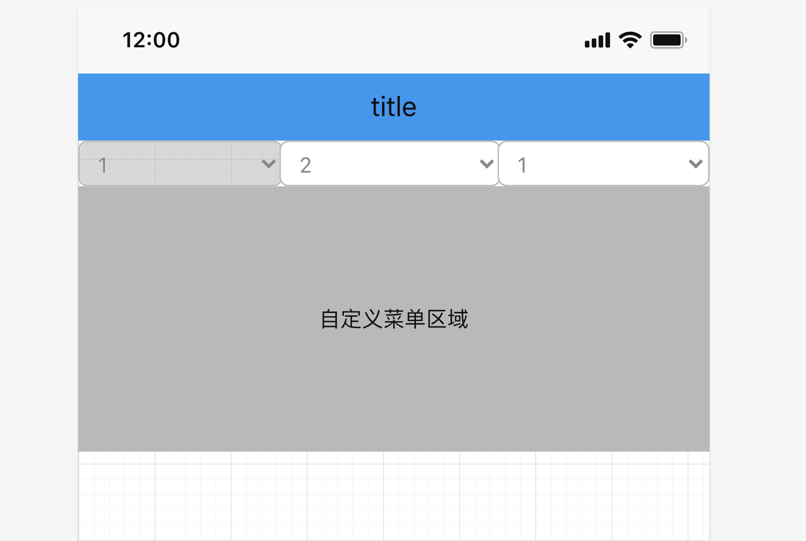
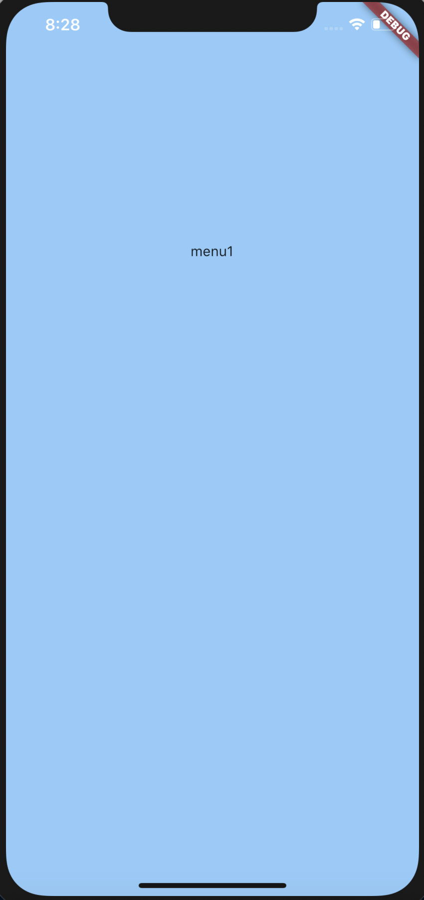
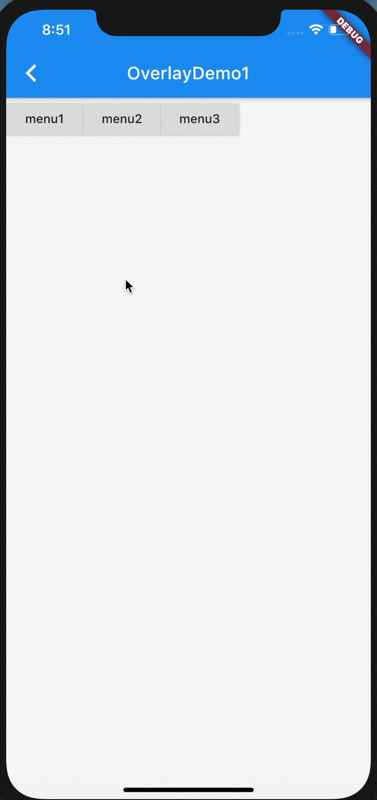
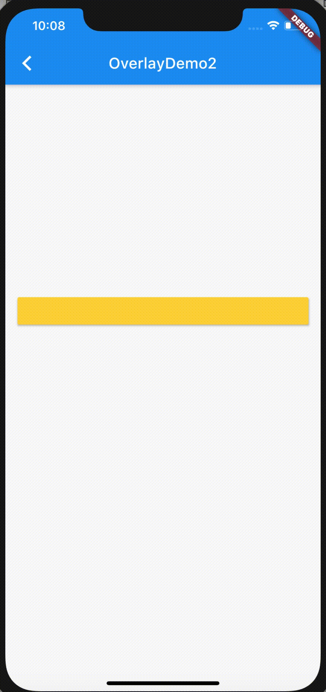

λ:
当前flutter版本：1.20.2

需求如图(画的示意图)，点击按钮弹出菜单区域，点击另外按钮时，关闭当前菜单同时打开对应菜单。
按说下拉菜单应该用 DropDownButton 或者 PopupMenuButton之类的, 但是有几个条件满足不了：
- 菜单宽度占满屏幕。
- 其他按钮可以响应点击。
尺寸，这两个按钮实现太难或者不可，底层做了尺寸限制。
点击效果，这两个按钮弹出效果用的PopupRoute, 就像平时跳新页面时Navigator.of(context).push(MaterialPageRoute(...)) 一个道理，差别是PopupRoute是透过的，下层的Widget仍可见。这一效果是因为成员变量opaque为false。
所以当点击 “第二个按钮所在位置” 时，并不会响应，顶多关闭当前菜单，因为按钮属于下层Widget，点击时其实是点击的“菜单所在页面”的空白区域。
Dialog 弹窗也是用这个实现的。底层通过Navigator.of(...).push<T>(_DialogRoute<T>(...)) 显示Dialog, _DialogRoute 继承自PopupRoute
Route 是另外的知识点，另作总结。
overlay
看了看Tooltips的实现，底层用的Overlay。因为Tooltips只能显示字符串，如果能自定义内容就好了。
Overlay本身继承自StatefulWidget，所以是可以直接拿来创建widget。但是我们上层一般都是用的 WidgetApp 或者 MaterialApp 组件，这两个组件里的 Navigator 会创建个 Overlay 来管理路由。也就是说树的上层节点已经有了，所以我们可以通过 Overlay.of 拿到上层的OverlayState:
1 | class Overlay extends StatefulWidget{ |
1 | class OverlayState extends State<Overlay> with TickerProviderStateMixin { |
再往下就是渲染层render的实现，_Theatre 维护个特殊的Stack
1 | class _Theatre extends MultiChildRenderObjectWidget |
自定义弹出框 OverlayEntry
1 | OverlayEntry({ |
由于Overlay底层是个特殊Stack, 所以OverlayEntry里可以放Positioned, 可以Positioned.fill看一下可控范围:

满屏。用Positioned控制布局位置和大小，这就是另外的事情了。
关闭OverlayEntry需要调用自身的remove() 方法。注意页面切换，页面关闭等等情况，都要自己处理。
1 | final overlayEntry = OverlayEntry(...); |
demo
1 | git clone -b flutter_overlay https://github.com/lzyprime/flutter_demos.git |
demo1: 菜单弹窗

关于怎么确定按钮下方的坐标，老生常谈。
demo2: 跟随按钮滚动

一个部件跟随另一个部件滚动，要用到 CompositedTransformTarget 和 CompositedTransformFollower，通过LayerLink绑定在一起。
1 | const CompositedTransformTarget({ |
1 | // example |
这只是demo, 细节忽略
～λ:
Overlay自由灵活，但是需要自己维护窗口关闭和显示的时机，处理不当，容易出bug。所以看需求而定，非要用的话，，谨慎。
另外，这篇文章从7.26就开始写，写了一半。如今8.20了才完工。看源码学东西其实很快，但是做这种总结，要花好多功夫，可能比学习的过程还要麻烦。
我还有很多东西没总结，但是顾虑花功夫在总结上有多大的用处。这让我想起了我之前搞得linux shell， 之前做后端和运维的时候，shell脚本非常熟练，从dev到外网全套工具链和自动化基本都是我写的，可现在不怎么碰之后，写之前我得先想想，不能顺手就来，了。
总结，我只能尽力而为了，有空就搞吧。只有足够的积累，才会有值得总结的东西。